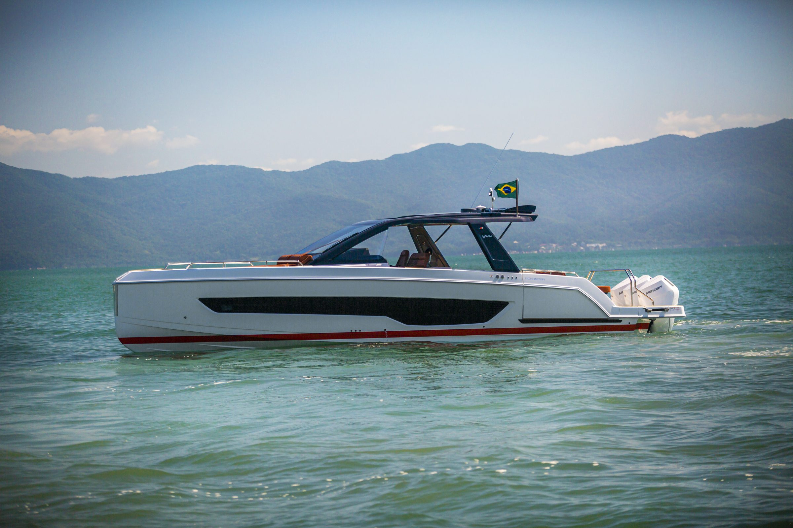

Visão geral
Duas varandas elétricas e plataforma submersível.
13,61 m
Comprimento máximo
4,17 m
Boca
A V44 leva o conceito de walk-around para 44 pés e resolve a convivência em um plano só: o cockpit e o beach club ficam no mesmo nível, sem degrau entre a mesa e a água.
Duas varandas de 2,40 m abrem eletricamente e alargam a praça de popa. A plataforma de popa é submersível, o que muda a relação com o mar em dia de fundeio.
Diferenciais
O que distingue
este modelo.
Beach club em nível único
O cockpit e o beach club ficam no mesmo plano.
Duas varandas de 2,40 m
Acionamento elétrico em ambos os bordos.
Plataforma de popa submersível
Facilita o banho e o acesso à água.
Centro-rabeta ou popa
Duas opções de motorização.
Galeria
Schaefer V44
Interior
pendente
pendente
Praça de popa
pendente
pendente
Cabine
pendente
pendente
Especificações
Números oficiais do estaleiro.
Conheça a V44 de perto.
Agende uma visita ou um sea trial com a equipe da NP Yachts.